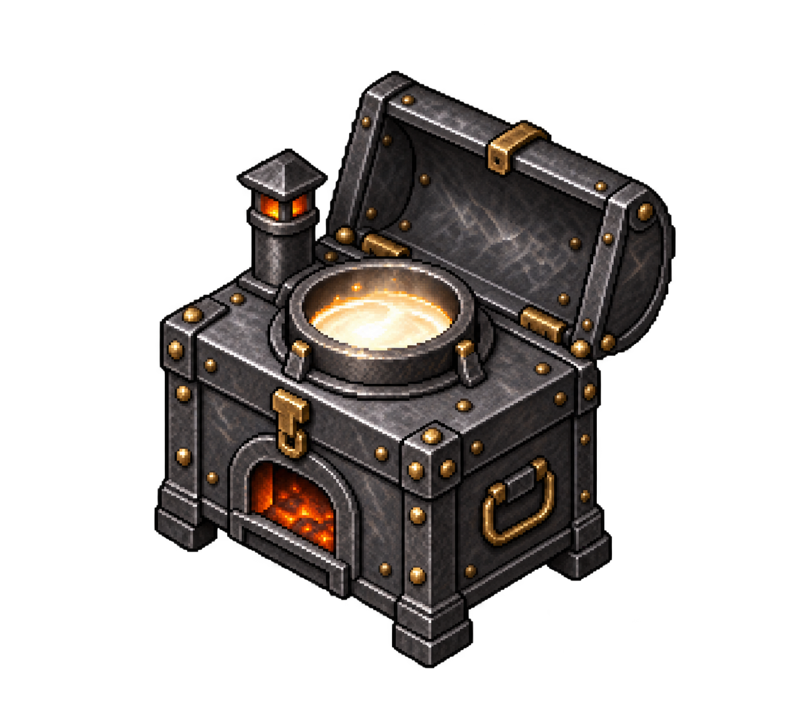

Le regole, in un posto solo.
Una guida essenziale alle funzioni attualmente presenti nello shard. Verrà aggiornata insieme al progetto.
Iniziare
Installa il client con il file Talaria_client.exe fornito dallo staff. Include già i dati di gioco: non occorre scaricare o decomprimere un payload separato. Puoi scegliere la cartella di installazione.
Il server deve essere acceso per poter entrare. Per l’account e il pacchetto aggiornato rivolgiti allo staff. Nella schermata iniziale trovi JOIN, UPDATE ed ESCI. Update è disponibile quando viene rilevato un aggiornamento pubblicato dallo staff; altrimenti è sbiadito e non cliccabile. Puoi anche attivare o disattivare la musica.
.classe. Quelli amministrativi iniziano con [ e richiedono privilegi staff.Classi e skill
Ogni skill prevista arriva naturalmente a 100. Non servono SOP o oggetti che alzano le skill: le pergamene di aumento e i bonus positivi degli oggetti non permettono di superare questo sistema.
.skills apre il pannello classico con le 50 skill attive. .classe permette di consultare le skill principali di ciascuna classe, confrontarle con quelle possedute e classarsi quando i requisiti sono rispettati. Da lì puoi anche sclassarti, tornando Power Player.
Tre livelli di classe
Conta la media delle skill principali di base, senza bonus temporanei o degli oggetti. Sotto 75 non puoi classarti. Il livello si aggiorna automaticamente.
| Livello | Media richiesta |
|---|---|
| 1 | Da 75 a meno di 90 |
| 2 | Da 90 a meno di 100 |
| 3 | 100 |
.classe e .stato mostrano il livello. Restano i limiti fuori classe: se i requisiti non sono più rispettati, i privilegi sono sospesi finché torni idoneo. Le skill non vengono cancellate.
Come funziona il limite
Non è previsto un cap complessivo di 720. Per un personaggio classato, la somma delle skill fuori classe non può superare tre volte la media delle skill principali.
Se tutte le principali sono a 100, la media è 100 e il budget fuori classe è 300: una classe con sei principali può quindi arrivare a 900 totali; una con otto a 1.100. Il pannello mostra somma totale, budget e sforamenti in evidenza. Cambiare classe non cancella skill automaticamente; un cambio incompatibile con il budget viene rifiutato.
Power Player: può sviluppare tutte le skill previste, senza i privilegi esclusivi delle classi. Il massimo teorico delle 50 skill a 100 è 5.000.
| Classe | Skill principali |
|---|---|
| Artisan | Arms Lore, Carpentry, Lumberjacking, Mining, Tailoring, Tinkering, Blacksmithing, Bowcraft/Fletching |
| Assassin | Anatomy, Taste Identification, Fencing, Archery, Poisoning, Tracking, Hiding, Stealth |
| Ranger | Animal Lore, Animal Taming, Archery, Tactics, Tracking, Veterinary |
| Thief | Lockpicking, Hiding, Remove Trap, Stealing, Stealth, Snooping |
| Swordsman | Anatomy, Arms Lore, Healing, Parrying, Swordsmanship, Tactics |
| Paladin / Black Guard | Anatomy, Healing, Meditation, Spirit Speak, Swordsmanship, Tactics |
| Necromancer | Alchemy, Inscription, Magery, Meditation, Resisting Spells, Spirit Speak |
| Mage | Alchemy, Evaluating Intelligence, Inscription, Magery, Meditation, Resisting Spells |
| Macer | Anatomy, Arms Lore, Healing, Mace Fighting, Parrying, Tactics |
| Fencer | Anatomy, Arms Lore, Fencing, Healing, Parrying, Tactics |
| Farmer | Animal Taming, Animal Lore, Fishing, Cooking, Breeding, Farming, Veterinary, Tracking |
| Druid | Alchemy, Animal Lore, Inscription, Magery, Meditation, Resisting Spells |
| Bard | Cartography, Enticement, Hiding, Musicianship, Peacemaking, Provocation |
| Archer | Anatomy, Archery, Healing, Hiding, Arms Lore, Tactics |
Skill escluse e blocchi di crescita
Non sono previste Herding, Necromancy, Focus, Chivalry, Bushido, Ninjitsu, Spellweaving, Mysticism, Imbuing e Throwing. La classe Necromancer usa il sistema magico personalizzato, non la skill nativa Necromancy.
Nel pannello skill: Up consente la crescita, Locked la blocca, Down consente la riduzione dei punti.
Crescita e controllo AFK
La crescita richiede attività valida. Il ritmo previsto è fino a 0,1 ogni 5 secondi; non si guadagnano punti semplicemente restando fermi. In modalità AFK il ritmo scende a 0,1 ogni 50 secondi.
Durante l’attività, a intervalli casuali di circa 15–30 minuti di utilizzo cumulativo, compare una carta da poker: scegli la risposta corretta entro 60 secondi. Una risposta giusta non elimina i controlli successivi.
- Il controllo ha un suono di notifica e un countdown.
- Risposta errata, tempo scaduto o disconnessione durante il controllo attivano la crescita lenta.
- Il nome mostra [Afk] nel paperdoll e nello status. Non è prevista la jail.
- Per tornare alla crescita normale, fai logout e login: entro pochi secondi viene proposto un nuovo controllo.
- Superandolo torni alla crescita normale e il tag scompare. Se lo fallisci, rimani AFK.
.amcstatus mostra lo stato del controllo; .stato riepiloga anche classe e limiti.
Raccolta e crafting
La striscia di crafting
Alchemy e Tailoring usano una sola striscia nera con bordo dorato. Fai doppio clic sull’attrezzo e seleziona il materiale nel backpack: il reagente per Alchemy, pelle, tessuto o pelle magica per Tailoring. Fai doppio clic sul disegno della categoria e poi dell’oggetto per avviare la lavorazione. Compaiono soltanto ricette accessibili con la tua skill e il materiale scelto.
Tieni premuta una freccia triangolare per scorrere lentamente; rilasciandola lo scorrimento si ferma. CATEGORIE torna alla scelta iniziale e MATERIALE permette di cambiarlo. I messaggi compaiono nel journal. Le altre professioni conservano il menu precedente.
Autoloop
Usa .autoloop 50 per impostare 50 tentativi, oppure .autoloop nostop per continuare finché l’azione è possibile. .autoloop apre il pannello e .autoloop stop disattiva l’impostazione. Non c’è il limite di 100 tentativi.
Avvia manualmente la prima azione e scegli il punto o la ricetta: il ciclo la ripete. Il primo tentativo e i fallimenti contano nel numero impostato. Muoversi interrompe il ciclo ma conserva l’impostazione: la successiva azione manuale ne avvia uno nuovo. Logout e riavvio la azzerano.
È disponibile per Mining, Lumberjacking, Fishing e il sistema di crafting: Blacksmithing, Cooking, Alchemy, Inscription, Tailoring, Carpentry, Bowcraft/Fletching, Tinkering e Cartography. Mancanza di materiali, risorse o strumenti interrompe il lavoro. Il menu di crafting rimane aperto durante il ciclo.
Minerali e fusione
L’oro grezzo e i lingotti hanno un giallo più brillante, anche per gli oggetti già esistenti.
- Le risorse minerarie sono finite e gestite per singolo tile: esaurirne uno non svuota l’area circostante. Si rigenerano dopo 10–20 minuti.
- Minerali dello stesso materiale si impilano insieme; l’aspetto del mucchio cambia con la quantità, per tutti i metalli.
- Vicino a una forgia, fai doppio clic sul minerale nel backpack per fonderlo direttamente.
- Anche un singolo pezzo può diventare un lingotto: non restano avanzi per quantità dispari.
- Per fondere oggetti basta la forgia; per il normale lavoro da fabbro restano i requisiti della ricetta.
- I materiali rari restano vincolati alla skill e alle risorse della zona.
La rottura degli strumenti viene segnalata in giallo. Tinkering usa il suono di lavorazione del fabbro e la fusione ha un suono di combustione.
.sign 0 chiede se firmare un oggetto eccezionale; .sign 1 firma automaticamente; .sign 2 non firma. La scelta vale per la sessione.
Alchemy
La creazione delle pozioni comuni segue il sistema di selezione dei reagenti e le ricette pubblicate da Zulu Hotel Italia, adattate al nostro massimo di skill 100. Gli effetti delle pozioni già presenti restano quelli dello shard.
- Metti nel backpack un mortaio (Mortar and Pestle), i reagenti e le bottiglie vuote.
- Fai doppio clic sul mortaio e seleziona il reagente nel backpack.
- La striscia mostra le categorie e le pozioni accessibili di quel reagente. Fai doppio clic sul disegno della categoria e poi della pozione; MATERIALE consente un’altra scelta. Le ricette sono riepilogate nella tabella qui sotto.
Successo, fallimenti e crescita
Al requisito minimo la probabilità è del 50%; aumenta di 2 punti percentuali per ogni punto di Alchemy oltre il requisito, fino al 100%. A Alchemy di base 100 è garantita una probabilità almeno del 90%, anche per le ricette più difficili. Con fame e sete entrambe sopra il 75% si aggiungono 5 punti percentuali: le più difficili passano al 95%. Le ricette più semplici possono già raggiungere il 100%. Sotto il requisito minimo la ricetta non si può creare.
Un tentativo fallito consuma tutti i reagenti della ricetta e un utilizzo del mortaio, ma conserva la bottiglia vuota. Le pozioni riuscite mantengono gli effetti già presenti; Lesser Agility e Lesser Strength aggiungono il livello minore, con bonus base di 5 a destrezza o forza per 2 minuti. La crescita della skill mantiene i tempi dello shard e il controllo AFK. È compatibile con .autoloop.
Ricette comuni
Ogni ricetta richiede anche una bottiglia vuota. I requisiti ZHI sono moltiplicati per 0,75: il requisito più alto diventa 90.
| Pozione | Reagenti | Alchemy minima |
|---|---|---|
| Lesser Agility | Bloodmoss × 1 | 22.5 |
| Night Sight | Spider’s Silk × 5 | 22.5 |
| Lesser Strength | Mandrake Root × 1 | 30 |
| Agility | Bloodmoss × 5 | 33.75 |
| Strength | Mandrake Root × 5 | 41.25 |
| Greater Agility | Bloodmoss × 9 | 45 |
| Lesser Explosion | Sulfurous Ash × 1 | 45 |
| Greater Strength | Mandrake Root × 9 | 52.5 |
| Lesser Poison | Nightshade × 1 | 56.25 |
| Refresh | Black Pearl × 1 | 56.25 |
| Lesser Cure | Garlic × 1 | 60 |
| Light Heal | Ginseng × 1 | 60 |
| Explosion | Sulfurous Ash × 5 | 67.5 |
| Poison | Nightshade × 3 | 67.5 |
| Cure | Garlic × 5 | 75 |
| Heal | Ginseng × 5 | 75 |
| Greater Poison | Nightshade × 5 | 78.75 |
| Full Refresh | Black Pearl × 9 | 78.75 |
| Deadly Poison | Nightshade × 9 | 90 |
| Greater Cure | Garlic × 9 | 90 |
| Greater Explosion | Sulfurous Ash × 9 | 90 |
| Greater Heal | Ginseng × 9 | 90 |
Attrezzi, Amanita e Minoc Furnace
Durata degli strumenti creati
La nuova durata vale per gli strumenti lavorativi appena craftati: picconi, martelli, attrezzi da tinker, seghe, kit da cucito, strumenti di Alchemy, Inscription, Cooking e Cartography, strumenti in legno e canne da pesca. Gli oggetti già esistenti conservano la propria durata.
| Risultato del crafting | Utilizzi |
|---|---|
| Normale | 250 |
| Exceptional | 500 |
| Exceptional, fame e sete entrambe sopra il 75% | 750 |
| Exceptional, stesso bonus, Bronze per il metallo oppure Oak per il legno | 1.000 |
| In Amanita, qualsiasi qualità | Indistruttibile: nessun consumo o usura |
Per ottenere qualsiasi oggetto exceptional serve la skill lavorativa di base a 100. Non basta un valore modificato da bonus. Fame e sete vengono valutate al completamento dell’oggetto: il bonus di durata acquisito resta anche quando successivamente scendono.
Usare un attrezzo da crafting exceptional in Amanita aumenta di 3 punti percentuali la probabilità exceptional (esempio: 25% → 28%), mantenendo il requisito di skill di base 100. In Tinkering, selezionando Amanita il menu mostra solo strumenti da lavoro; Carpentry e Bowcraft mantengono le proprie ricette.
Con piccone, pala o accetta Amanita exceptional aumenta di 3 punti percentuali la probabilità di raccogliere il materiale raro della vena o dell’albero invece della risorsa comune, rispettando i requisiti di skill. Amanita Log non riceve questo bonus. Con una canna Amanita exceptional aumenta di 3 punti percentuali la probabilità di pescare una mappa del tesoro: restano necessari Fishing di base almeno 90 e acqua profonda. Gli attrezzi Amanita normali restano indistruttibili ma non hanno questi bonus.
Riciclare gli strumenti in Amanita: con le pinze da fabbro, vicino a una forgia, puoi fondere gli strumenti in Amanita Metal e recuperare Amanita Ingot. Serve Mining oppure Blacksmith almeno 100 (valore effettivo). Si recupera il 66% dei lingotti della ricetta, arrotondato per difetto: un piccone da 4 lingotti ne restituisce 2, un attrezzo da 2 ne restituisce 1. Le ricette da un solo lingotto non sono riciclabili; gli strumenti in Amanita Wood non si trasformano in lingotti. La qualità normal o exceptional non cambia il recupero.
Attenzione: attrezzi Amanita da un solo lingotto
Martello (Hammer), pinze da fabbro (Tongs), penna da cartografo (MapmakersPen) e penna da scriba (ScribesPen) consumano 1 lingotto Amanita ciascuno. Per ottenere un risultato EXCEPTIONAL garantito, al momento della creazione devi avere Tinkering di base almeno 100 e fame e sete entrambe almeno al 75%. Controllale con [fame e [sete prima di iniziare e durante le produzioni ripetute.
Se fame oppure sete scende sotto il 75%, il risultato exceptional non è più garantito: torna la normale probabilità exceptional. Un attrezzo riuscito ma normale consuma comunque il lingotto prezioso: rimane indistruttibile, ma non dà il bonus exceptional del 3%. Inoltre questi quattro attrezzi non possono essere fusi per recuperare il lingotto, perché il recupero del 66%, arrotondato per difetto, sarebbe zero.
Esempio: con Tinkering 100, fame 75% e sete 70%, un martello Amanita può uscire normale. Il lingotto è stato consumato e non si può recuperare sciogliendo il martello. Porta entrambe le percentuali almeno al 75% prima di craftarlo se vuoi la qualità exceptional garantita. La garanzia riguarda la qualità di una creazione riuscita e non modifica la probabilità di riuscita della ricetta.
Il materiale Amanita
Amanita Ingot e Amanita Log / Board sono bianchi. Per ogni oggetto si consumano le normali quantità della sua ricetta, sostituendo il materiale con Amanita. A skill 100, un crafting riuscito in Amanita ha il 25% di probabilità di essere exceptional; anche un risultato normale è indistruttibile, senza requisiti di fame o sete.
A Lumberjacking di base 100, ogni raccolta riuscita ha lo 0,1% di probabilità di dare un Amanita Log aggiuntivo. Può essere trasformato in tavole e utilizzato nelle ricette in legno, comprese canne da pesca, archi, strumenti musicali e mobili. Gli oggetti non impilabili in Amanita, anche normali e senza bonus fame o sete, non consumano utilizzi né durabilità dove questi sono previsti. Le frecce continuano a essere consumate; i mobili normalmente non hanno usura.
Minoc Furnace: acquisto e fusione

Si compra esclusivamente dai fabbri di Minoc per 100.000 gp. È personale, blessed e non lootabile. Puoi portarla ovunque o appoggiarla in casa: soltanto il proprietario può utilizzarla e prelevarla.
- Mettila nel backpack e fai doppio clic per aprire il pannello.
- Premi Add e seleziona Gold Ingot o Valorite Ingot nel backpack, oppure trascinali sulla fornace. Il pannello mostra le quantità accumulate; i depositi vengono conservati come contatori senza il peso dei lingotti.
- Premi Fondi: la Minoc Furnace funziona autonomamente, senza forgia o incudine esterna. Ogni 10.000 Gold Ingot + 10.000 Valorite Ingot produce 1 Amanita Ingot. Il pulsante fonde tutte le coppie complete disponibili, lasciando i resti depositati. La fusione è garantita.
- Trascina il lingotto dalla casella di risultato nel backpack. È un oggetto reale: una volta prelevato ha il suo normale peso.
Proprietario, depositi, risultati e proprietà degli oggetti vengono conservati dopo salvataggio e riavvio. Per vedere il disegno e trascinare il risultato serve il client aggiornato distribuito dallo staff.
Fame e sete
.fame e .sete mostrano le rispettive percentuali. Sono due livelli separati: calano del 5% ogni 5 minuti trascorsi online. Il timer è condiviso, quindi il primo calo può avvenire prima di cinque minuti dall’accesso.
Una bevuta d’acqua dalla brocca ripristina il 50%: due bevute bastano per passare da 0 a 100%. Il cibo sazia in base al tipo e al suo valore alimentare, non tutto allo stesso modo.
Bonus: entrambe sopra il 75%
- Crafting: probabilità di riuscita aumentata del 5% rispetto al valore normale, senza superare il 100%.
- Materiali rari: bonus alla selezione del materiale, sempre entro i requisiti della skill e della zona.
- Combattimento e magie: rigenerazione di stamina e mana aumentata del 5%; non aumenta direttamente il danno.
Quando almeno uno dei due livelli scende al 75% o meno, si torna ai valori normali. Il controllo AFK è indipendente da fame e sete.
Magie e libri
Sono presenti lo Spellbook classico e il Runebook, oltre ai libri personalizzati. L’uso dipende dalla classe, dalle skill e dal mana disponibile. Gli effetti sono adattati allo shard: non tutte le meccaniche di ZHI sono riprodotte identicamente.
| Libro | Classe | Uso |
|---|---|---|
| Earthbook · 16 magie | Druid | .castspell Nome completo |
| Codex Damnorum · 16 magie | Necromancer | .castspell Nome completo |
| Tome of Ancient Melodies · 8 melodie | Bard | .play oppure .play 1….play 8; serve uno strumento. .stopplay interrompe. |
| Preghiere · 17 | Paladin / Black Guard | .pray oppure .pray Nome completo livello con livello 1–5. .stoppray interrompe. |
Earthbook e Codex sono disponibili dai Mage, il tomo delle melodie dai Bard.
Magie dell’Earthbook
Antidote; Owl sight; Shifting Earth; Summon mammals; Call lightning; Earth Blessing; Earth portal; Nature’s touch; Gust of air; Rising fire; Shapeshift; Ice Strike; Wall of thorns; Waterfall; Spider’s bane; Elemental spirit.
Magie del Codex Damnorum
Control Undead; Darkness; Decaying Ray; Spectre’s Touch; Abissal Flame; Death Portal; Sacrifice; Wraith’s Breath; Sorcerer’s Bane; Summon Spirit; Wraith Form; Wyvern Strike; Kill; Liche; Plague; Animate Dead.
Melodie e preghiere
Melodie: Rigenerazione, Protezione, Scudo Musicale, Indebolire, Paralisi, Illusione, Disarcionare, Resurrezione.
Preghiere: Aura of Air, Aura of Earth, Aura of Fire, Aura of Free Action, Aura of Healing, Aura of Holy, Aura of Holy Burn, Aura of Holy Light, Aura of Immunity, Aura of Necro, Aura of Physical, Aura of Poison, Aura of Reflect, Aura of Resurrection, Aura of Retribution, Aura of Sacred Path, Aura of Water.
Animali e coltivazioni
I grizzly selvatici sono aggressivi e attaccano quando individuano un bersaglio vicino.
Se fai logout a cavallo, rientri a cavallo. Gli animali controllati lasciati liberi restano nel mondo per un’ora reale: possono vagare e possono essere uccisi. Trascorsa l’ora, quelli ancora vivi vengono ricoverati automaticamente. Rientrare prima annulla l’attesa.
.breeding consente l’allevamento tra animali posseduti della stessa specie. Sono previsti un intervallo di 30 minuti, un massimo di cinque nascite per femmina e una fertilità che diminuisce nelle generazioni. Non è presente l’intero catalogo di incroci di ZHI.
.farming usa i semi su terreno adatto nella propria casa. Le colture maturano in circa 5–12 minuti e si raccolgono con doppio clic. I semi si acquistano dai Farmer.
Velarca e zainetto dei reagenti
La creatura dei boschi di Yew
Il Velarca ha pelo chiaro, corna bianche e riflessi azzurri. Esiste un solo esemplare selvatico speciale alla volta nei boschi di Yew, su Trammel. Tracking permette di cercarlo nella categoria animali quando è abbastanza vicino, con i normali controlli della skill.
Quando muore o viene addomesticato, dopo 30 minuti compare un nuovo esemplare lontano dalla posizione precedente. Il timer viene conservato nei salvataggi. È addomesticabile, allevabile e cavalcabile: richiede 85 Animal Taming e occupa due slot di controllo.
È poco resistente ma colpisce con forza, usa Magic Arrow e, quando scende a un quarto della vita, tenta di salvarsi con Lightning, una volta per combattimento.
Dieci pelli per uno zainetto
Scuoiando il Velarca nato dal bosco raccogli 10 pelli magiche. Il potere proviene da Yew: i figli ottenuti con Breeding danno soltanto 10 pelli normali, mai quelle adatte allo zainetto. Spostare l’esemplare originale non cambia la sua origine.
Con il kit da cucito seleziona le pelli magiche e apri Zaini magici. Uno zainetto richiede tutte e 10 le pelli, almeno 80 Tailoring e un tentativo di lavorazione. Per l’exceptional restano le regole generali della professione: la qualità non è garantita soltanto perché possiedi le pelli.
| Qualità | Limite per tipo di reagente |
|---|---|
| Standard | 500 |
| Exceptional | 1.000 |
Il limite considera insieme tutte le pile dello stesso reagente. Trascinando una pila più grande dello spazio disponibile, lo zainetto prende la quantità che manca al limite e restituisce l’eccesso alla provenienza. Se è già pieno, restituisce tutta la pila. La sacca aperta ha pelle blu, interno scuro e bordo di pelo chiaro. Lo zainetto accetta soltanto reagenti, senza altri contenitori o oggetti. Nel backpack di un Mage classato e idoneo, il peso dei reagenti al suo interno non conta; lo zainetto pesa comunque 1. In banca, a terra o nel backpack di un’altra classe i reagenti tornano a pesare normalmente. Sclassarsi sospende l’effetto.
Non è blessed: può essere perso con le normali regole di morte. Può essere rubato soltanto da un Mage classato; questo requisito non sostituisce Stealing o gli altri controlli del furto.
Mondo e servizi
- Vendor: oltre al menu, rispondono a
buyesellpronunciati nelle vicinanze. - Tinker della miniera: vende piccone, martello da fabbro, strumenti da tinker e pinze per la fusione. Resta sul posto e, dopo essersi girato verso un cliente, torna alla direzione impostata.
- Tinker generici: non vendono strumenti musicali.
- Bennet, il cuoco del pub presso la miniera di Minoc: vende anche rondelle di pesce cotte.
- Cestini pubblici: eliminano gli oggetti contenuti dopo tre minuti. Con
.sortpuoi trasferire in blocco tutti gli oggetti corrispondenti, con un solo avviso. - Meteo: la pioggia non viene visualizzata negli interni delle miniere e dei dungeon; torna visibile all’esterno.
Traveller
I Traveller permettono viaggi tra città servite. Il biglietto costa 200 monete e il passaggio resta aperto per 30 secondi. Le destinazioni dipendono dai Traveller presenti; il servizio opera su Trammel.
Comandi dei giocatori
Scrivi il comando nella chat. Alcuni richiedono di selezionare un oggetto o un bersaglio e rispettano distanza, visibilità e diritti di accesso.
| Comando | Funzione |
|---|---|
.help | Aiuto sui comandi disponibili. |
.classe · .skills · .stato | Classe, pannello skill e riepilogo del personaggio. |
.players | Giocatori online; non rivela i personaggi nascosti. |
.fame · .sete · .hungry | Percentuali dei bisogni; hungry mostra il valore alimentare nativo. |
.amcstatus | Stato del controllo presenza. |
.autoloop · .sign | Ripetizione delle lavorazioni e firma dei prodotti; dettagli nella sezione crafting. |
.arm1 · .arm2 · .arm3 · .disarm | Gestione degli slot di equipaggiamento. |
.setbag · .removejewels | Imposta il contenitore degli oggetti rimossi; rimuove i gioielli. |
.bandageself | Usa una benda su di te. |
.c testo · .ca testo · .all testo | Canali di comunicazione; intervallo minimo di tre secondi. |
.castspell · .pray · .play | Magie, preghiere e melodie personalizzate. |
.stoppray · .stopplay | Interrompe preghiere e melodie. |
.consider · .tamingcalc | Valutazione di un bersaglio e delle possibilità di controllo di un animale. |
.count · .inventory · .reags | Conteggio in un contenitore, inventario e reagenti. |
.sort | Seleziona un campione nel backpack, poi il contenitore di destinazione: trasferisce subito tutti gli oggetti dello stesso tipo e colore. Funziona anche con i cestini pubblici accessibili. |
.move | Trasferisce gli oggetti tra contenitori con spostamenti progressivi; è distinto da sort. |
.setlootbag · .loot · .tloot | Contenitore del bottino e raccolta da un cadavere. Restano i controlli sui diritti e sulle azioni criminali. |
.empty | Svuota una pozione, restituendo la bottiglia. |
.redeed | Riconverte un addon compatibile in deed nella propria casa, con conferma. Non agisce sugli statici della mappa. |
.insure | Assicurazione degli oggetti quando consentita dal sistema nativo. |
.door · .guards · .amisafe | Porte vicine, richiesta delle guardie e verifica della protezione. |
.where · .date | Posizione e data del mondo. |
.whodidit | Identifica il creatore di un Wall of Stone attivo. |
.farming · .breeding | Coltivazione e allevamento. |
.email · .password | Gestione dei dati dell’account, con verifica della password corrente. Non inserire credenziali nei canali pubblici. |
withdraw importo | Da pronunciare presso un banchiere, senza punto, per prelevare. |
Comandi ZHI non importati
Sono esclusi i comandi che dipendono da sistemi non presenti: tecniche speciali (.ability, .setcriticalhit, .snipershot), selezione minerale (.mina), Evergreen (.newbietime, .renounce), proprietà personalizzata (.own), dati personali aggiuntivi (.personaldata), passaggio speciale delle porte (.passdoor), quest point (.questpoint), sistemi razziali (.racialcolor, .racial, .rsay), sacrificio pet (.sacrifice), cittadinanza (.town), guerre (.warstats), oggetti temporanei (.checktimeditem) e altari (.getrespawnaltar, .infoaltar).
Housing
È presente il sistema di case nativo di ServUO: strumenti di piazzamento dagli Architect, case prefabbricate e personalizzabili, accessi, amici e comproprietari, contenitori sicuri e oggetti bloccati. L’impostazione corrente prevede una casa per account.
Strumenti staff
Questa sezione è informativa: i normali giocatori non ottengono accesso agli strumenti amministrativi.
[BlackBox: apre UO Black Box per Administrator. Search Tool è il catalogo; Move Tool sposta X/Y/Z e offre Turn quando supportato. Gli oggetti del mondo creati vengono conservati con il salvataggio. Gli statici della mappa richiedono gli strumenti di editing appropriati.[Hidee[Unhide: seleziona il personaggio da nascondere o rendere visibile.[Restartoppure[Restart 10: riavvio con avvisi rossi e in grassetto a 10, 5, 4, 3, 2 e 1 minuto; salva prima del riavvio.[Shutdown: salva e spegne il server; non è il riavvio programmato.[Add CityTraveller: aggiunge un Traveller. Imposta la città tramite[Props; il menu delle destinazioni usa i Traveller presenti.[Props: modifica le proprietà amministrative; il colore si chiama Hue.[Remove: rimuove un oggetto dinamico. Una componente di un addon può comportare la rimozione dell’intero addon; non usarlo come comando di modifica degli statici della mappa.